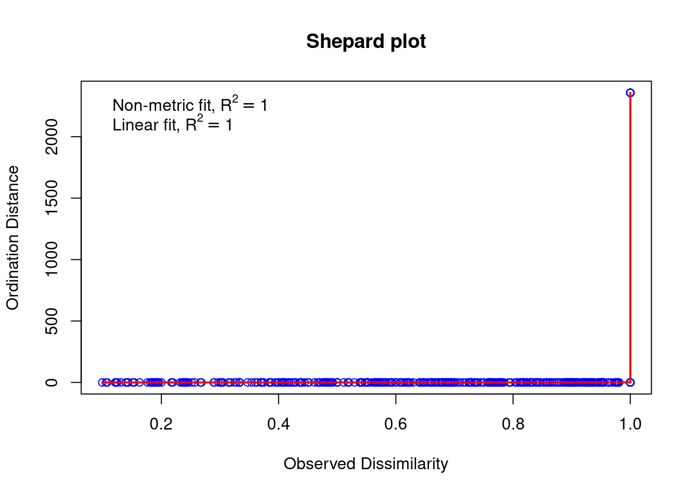
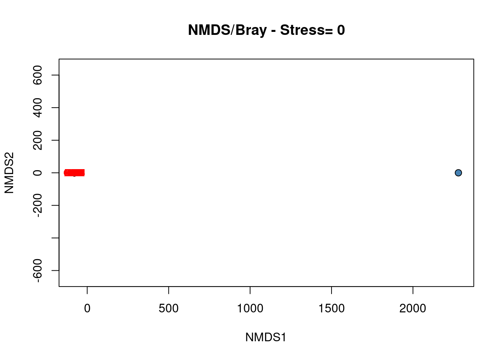
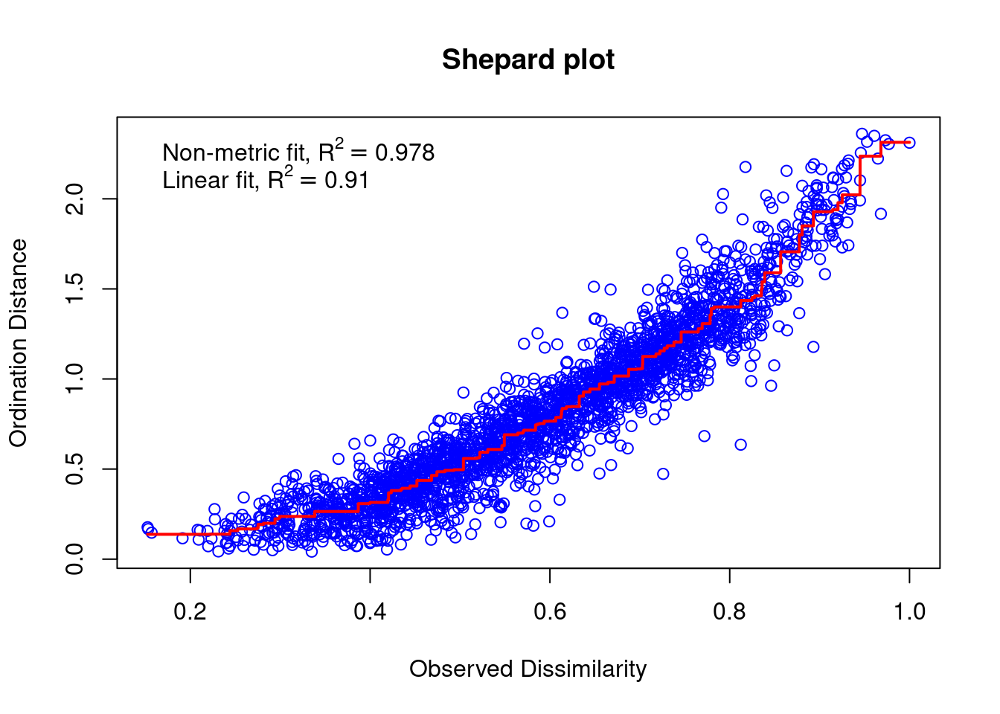
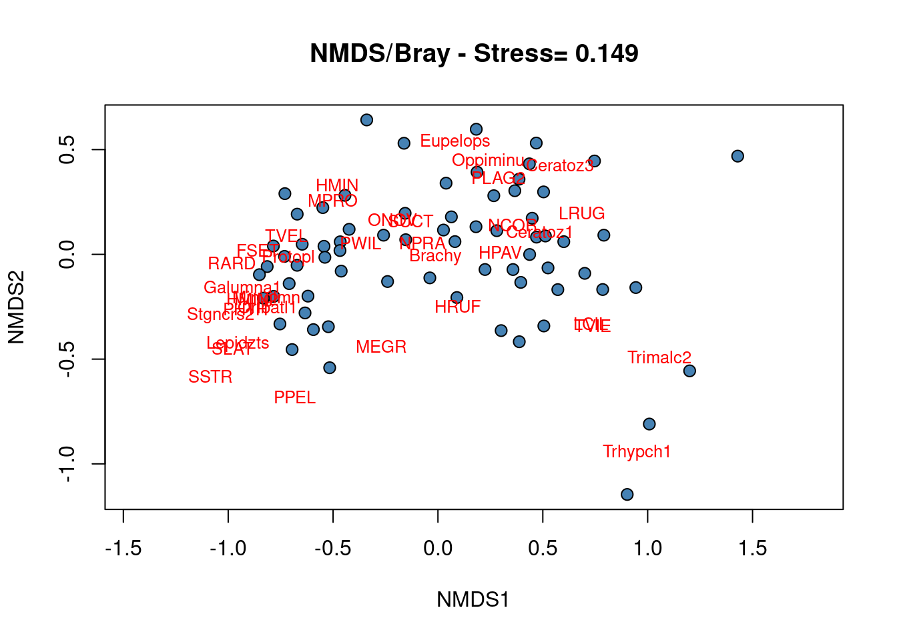

Chapter 16 Nonmetric MultiDimensional Scaling
The unconstrained ordination methods presented above allow to organize objects (e.g. sites) characterized by descriptors (e.g. species) in full-dimensional space. In other words, PCA, CA and PCoA computes a large number of ordination axes (proportional to the number of descriptors) representing the variation of descriptors among sites and preserve distance among objects (the Euclidean distances in PCA, the Chi2 distances in CA and the type of distances defined by the user in PCoA). Users can then select the axis of interest (generally the first two ones as the explained the larger part of the variation) to represent objects in an ordination plot. The produced biplot thus represents well the distance among objects (e.g. the between-sites similarity), but fails to represent the whole variation dimensions of the ordination space (as Axis3, Axis4, …, Axisn are not represented on the biplot, but still contribute to explain the variation among objects).
In some case, the priority is not to preserve the exact distances among sites, but rather to represent as accurately as possible the relationships among objects in a small and number of axes (generally two or three) specified by the user. In such cases, nonmetric multidimensional scaling (NMDS) is the solution. If two axes are selected, the biplot produced from NMDS is the better 2D graphical representation of between-objects similarity: dissimilar objects are far apart in the ordination space and similar objects close to one another. Moreover, NMDS allows users to choose the distance measure applied to calculate the ordination.
To find the best representation of objects, NMDS applies an iterative procedure that tries to position the objects in the requested number of dimensions in such a way as to minimize a stress function (scaled from 0 to 1) which measure the goodness-of-fit of the distance adjustment in the reduced-space configuration. Consequently, the lower the stress value, the better the representation of objects in the ordination-space is. An additional way to assess the appropriateness of an NDMS is to construct a Shepard diagram which plot distances among objects in the ordination plot against the original distances. The R2 obtained from the regression between these two distances measure the goodness-of-fit of the NMDS ordination.
# Run the NMDS
spe.nmds <- metaMDS(spe[, -8], distance = "bray", k = 2)## Warning in distfun(comm, method = distance, ...): you have empty rows: their dissimilarities may be
## meaningless in method "bray"## Run 0 stress 0.001629362
## Run 1 stress 0.0001181382
## ... New best solution
## ... Procrustes: rmse 0.003724052 max resid 0.007515734
## ... Similar to previous best
## Run 2 stress 9.553164e-05
## ... New best solution
## ... Procrustes: rmse 0.0002547948 max resid 0.0005130467
## ... Similar to previous best
## Run 3 stress 9.892474e-05
## ... Procrustes: rmse 0.0001455056 max resid 0.0002503519
## ... Similar to previous best
## Run 4 stress 9.981792e-05
## ... Procrustes: rmse 0.0002383265 max resid 0.0004859631
## ... Similar to previous best
## Run 5 stress 9.623433e-05
## ... Procrustes: rmse 0.0001940406 max resid 0.0003775032
## ... Similar to previous best
## Run 6 stress 9.717781e-05
## ... Procrustes: rmse 0.0001516497 max resid 0.0003184701
## ... Similar to previous best
## Run 7 stress 7.407554e-05
## ... New best solution
## ... Procrustes: rmse 8.093881e-05 max resid 0.0001634946
## ... Similar to previous best
## Run 8 stress 9.326399e-05
## ... Procrustes: rmse 7.160365e-05 max resid 0.0001282936
## ... Similar to previous best
## Run 9 stress 9.90932e-05
## ... Procrustes: rmse 0.0002401237 max resid 0.0004369419
## ... Similar to previous best
## Run 10 stress 9.267306e-05
## ... Procrustes: rmse 7.009771e-05 max resid 0.0001393932
## ... Similar to previous best
## Run 11 stress 9.869138e-05
## ... Procrustes: rmse 0.0002399132 max resid 0.0005355816
## ... Similar to previous best
## Run 12 stress 8.491674e-05
## ... Procrustes: rmse 0.0001255121 max resid 0.0001843846
## ... Similar to previous best
## Run 13 stress 3.93213e-05
## ... New best solution
## ... Procrustes: rmse 6.521976e-05 max resid 0.0001557835
## ... Similar to previous best
## Run 14 stress 0.0001109086
## ... Procrustes: rmse 0.000279454 max resid 0.0005355093
## ... Similar to previous best
## Run 15 stress 6.024348e-05
## ... Procrustes: rmse 2.808533e-05 max resid 5.203858e-05
## ... Similar to previous best
## Run 16 stress 0.0001046671
## ... Procrustes: rmse 0.0002652845 max resid 0.0005638928
## ... Similar to previous best
## Run 17 stress 8.994448e-05
## ... Procrustes: rmse 0.0001924131 max resid 0.0003504478
## ... Similar to previous best
## Run 18 stress 9.211753e-05
## ... Procrustes: rmse 3.630429e-05 max resid 8.648011e-05
## ... Similar to previous best
## Run 19 stress 9.962588e-05
## ... Procrustes: rmse 0.0002406458 max resid 0.0004501666
## ... Similar to previous best
## Run 20 stress 6.785095e-05
## ... Procrustes: rmse 3.353513e-05 max resid 6.318942e-05
## ... Similar to previous best
## *** Best solution repeated 8 times## Warning in metaMDS(spe[, -8], distance = "bray", k = 2): stress is (nearly)
## zero: you may have insufficient data### Extract the results
spe.nmds##
## Call:
## metaMDS(comm = spe[, -8], distance = "bray", k = 2)
##
## global Multidimensional Scaling using monoMDS
##
## Data: spe[, -8]
## Distance: bray
##
## Dimensions: 2
## Stress: 3.93213e-05
## Stress type 1, weak ties
## Best solution was repeated 8 times in 20 tries
## The best solution was from try 13 (random start)
## Scaling: centring, PC rotation, halfchange scaling
## Species: expanded scores based on 'spe[, -8]'### Assess the goodness of fit and draw a Shepard plot
spe.nmds$stress## [1] 3.93213e-05stressplot(spe.nmds, main = "Shepard plot")
# Construct the biplot
plot(spe.nmds, type = "none", main = paste("NMDS/Bray - Stress=",
round(spe.nmds$stress, 3)), xlab = c("NMDS1"), ylab = c("NMDS2"))
points(scores(spe.nmds, display = "sites", choices = c(1, 2)),
pch = 21, col = "black", bg = "steelblue", cex = 1.2)
text(scores(spe.nmds, display = "species", choices = c(1)), scores(spe.nmds,
display = "species", choices = c(2)), labels = rownames(scores(spe.nmds,
display = "species")), col = "red", cex = 0.8)
The Shepard plot identifies a strong correlation between observed dissimilarity and ordination distance (R2 > 0.95), highlighting a high goodness-of-fit of the NMDS.
The biplot of the NMDS shows a group of closed sites characterized by the species BLA, TRU, VAI, LOC, CHA and OMB, while the other species form a cluster of sites in the upper right part of the graph. Four sites in the lower part of the graph are strongly different from the others.
Challenge 6 Run the NMDS of the mite species abundances in 2 dimensions based on a Bray-Curtis distance. Assess the goodness-of-fit of the ordination and interpret the biplot.
Challenge 6 - Solution
mite.spe.nmds <- metaMDS(mite.spe, distance = "bray", k = 2)## Square root transformation
## Wisconsin double standardization
## Run 0 stress 0.1491318
## Run 1 stress 0.1554939
## Run 2 stress 0.1491563
## ... Procrustes: rmse 0.001854294 max resid 0.009942776
## ... Similar to previous best
## Run 3 stress 0.1722885
## Run 4 stress 0.1640206
## Run 5 stress 0.1510132
## Run 6 stress 0.4079681
## Run 7 stress 0.151013
## Run 8 stress 0.149146
## ... Procrustes: rmse 0.001409456 max resid 0.01034491
## Run 9 stress 0.1509079
## Run 10 stress 0.1547448
## Run 11 stress 0.1549654
## Run 12 stress 0.1582657
## Run 13 stress 0.1564172
## Run 14 stress 0.1515057
## Run 15 stress 0.1651025
## Run 16 stress 0.1491414
## ... Procrustes: rmse 0.001307532 max resid 0.006493007
## ... Similar to previous best
## Run 17 stress 0.1670749
## Run 18 stress 0.1706057
## Run 19 stress 0.1618246
## Run 20 stress 0.1703877
## *** Best solution repeated 2 times### Extract the results
mite.spe.nmds##
## Call:
## metaMDS(comm = mite.spe, distance = "bray", k = 2)
##
## global Multidimensional Scaling using monoMDS
##
## Data: wisconsin(sqrt(mite.spe))
## Distance: bray
##
## Dimensions: 2
## Stress: 0.1491318
## Stress type 1, weak ties
## Best solution was repeated 2 times in 20 tries
## The best solution was from try 0 (metric scaling or null solution)
## Scaling: centring, PC rotation, halfchange scaling
## Species: expanded scores based on 'wisconsin(sqrt(mite.spe))'### Assess the goodness of fit
mite.spe.nmds$stress## [1] 0.1491318stressplot(mite.spe.nmds, main = "Shepard plot")
### Construct the biplot
plot(mite.spe.nmds, type = "none", main = paste("NMDS/Bray - Stress=",
round(mite.spe.nmds$stress, 3)), xlab = c("NMDS1"), ylab = c("NMDS2"))
points(scores(mite.spe.nmds, display = "sites", choices = c(1,
2)), pch = 21, col = "black", bg = "steelblue", cex = 1.2)
text(scores(mite.spe.nmds, display = "species", choices = c(1)),
scores(mite.spe.nmds, display = "species", choices = c(2)),
labels = rownames(scores(mite.spe.nmds, display = "species")),
col = "red", cex = 0.8)
The correlation between observed dissimilarity and ordination distance (R2 > 0.91) and the stress value relatively low, showing together a good accuracy of the NMDS ordination.
No cluster of sites can be precisely defined from the NMDS biplot showing that most of the species occurred in most of the sites, i.e. a few sites shelter specific communities.